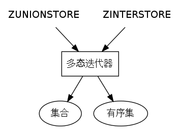

Redis 的 ZUNIONSTORE 命令和 ZINTERSTORE 命令的另一种用法¶
ZUNIONSTORE 和 ZINTERSTORE 是用于有序集（sorted set）的聚合命令。
根据文档的说明：
ZUNIONSTORE用于计算给定的一个或多个有序集的并集。而
ZINTERSTORE则用于计算给定的一个或多个有序集的交集。
除此之外， 这两个命令还有一种没有记载于文档的用法， 那就是 —— 这两个命令除了可以用于有序集之外，还可以用于集合（set）。
例子：使用 ZUNIONSTORE 和 ZINTERSTORE 计算爱好水果的并集和交集¶
作为例子，
下文展示了怎样用 ZUNIONSTORE 和 ZINTERSTORE 命令计算爱好水果的并集和交集。
首先，输入一些测试数据（注意，输入的三个键都是集合，并非有序集）：
redis> SADD huangz orange banana tomato
(integer) 3
redis> SADD peter apple strawberry orange banana
(integer) 4
redis> SADD john lemon tomato orange apple
(integer) 4
接着，用 ZUNIONSTORE 命令计算三人爱好水果的并集：
redis> ZUNIONSTORE favorite-fruits-union 3 huangz peter john
(integer) 6
redis> ZRANGE favorite-fruits-union 0 -1 WITHSCORES
1) "lemon"
2) "1"
3) "strawberry"
4) "1"
5) "apple"
6) "2"
7) "banana"
8) "2"
9) "tomato"
10) "2"
11) "orange"
12) "3"
ZUNIONSTORE 的计算结果非常有用，它清晰地展示了输入的三个集合中，不同的水果出现了多少次。
相比之下， SUNION 命令的结果就显得单薄很多了：
redis> SUNION huangz peter john
1) "tomato"
2) "banana"
3) "apple"
4) "orange"
5) "lemon"
6) "strawberry"
SUNION 的结果只显示计算并集所得的元素，但并不显示元素在输入集合中出现了多少次。
从 ZUNIONSTORE 和 SUNION 两个命令的对比中可以看出：
如果只是处理集合之间的关系，那么
SUNION已经足够。另一方面，如果不仅要处理集合之间的关系，还需要对集合元素进行聚合计算，那么就必须使用
ZUNIONSTORE。
三人爱好水果的并集可以通过 ZINTERSTORE 命令来计算：
redis> ZINTERSTORE favorite-fruits-inter 3 huangz peter john
(integer) 1
redis> ZRANGE favorite-fruits-inter 0 -1 WITHSCORES
1) "orange"
2) "3"
可以看出，
ZINTERSTORE 的用处并不如 ZUNIONSTORE 那么大 ——
因为只计算并集的话，
记录元素出现的次数是没有用的（并集元素出现的次数必然等于输入集合的个数），
所以计算并集实际上只使用 SINTER 或者 SINTERSTORE 就可以了：
redis> SINTER huangz peter john
1) "orange"
实例：使用集合和 ZUNIONSTORE 实现签到功能¶
上面展示的计算爱好水果的例子非常有趣， 而且也非常实用 —— 将水果换成物品、商品、书籍、等等， 就可以衍生出更多玩法， 应用到各种不同的应用中。
作为一个更详细的例子，让我们用集合和 ZUNIONSTORE 命令来实现一个签到功能。
什么是签到？¶
签到在很多网站都有不同的叫法，比如出勤、打卡，等等， 有些是由用户自己操作的， 而另一些则是由网站后台自动记录的， 不管如何， 签到功能都有以下共同特性：
记录用户的某一行为（通常是登录，或者完成某项任务），并进行计数。
为用户提供签到次数统计，比如说，用户界面会显示“你已经签到了 xx 次”，诸如此类。
对所有用户的签到进行统计，并进行签到次数排名。
以下是 扇贝网 上的一个签到排名示例：
签到功能的实现¶
以下 Python 代码实现了一些基本的签到功能，
其中用到了前面提到的，
将 ZUNIONSTORE 应用到集合上的技巧，
并且也用到了集合本身的命令，
比如 SINTERSTORE ：
#coding: utf-8
from redis import Redis
r = Redis()
"""
key maker
"""
def _sign_key(date):
"""
生成签到日期的键，例如 2013-4-13::signed
"""
return "{0}::signed".format(date)
def _sign_count_key(user):
"""
生成用户签到计数器的键，例如 tom::sign_count
"""
return "{0}::sign_count".format(user)
"""
api implement
"""
def sign(user, date):
"""
用户在指定日期签到
"""
# 注意，为了保持示例实现的简单性
# 目前的这个实现不能防止一个用户在同一天多次签到
# 解决这个问题需要使用事务或者 Lua 脚本
r.incr(_sign_count_key(user))
r.sadd(_sign_key(date), user)
def signed(user, date):
"""
用户在指定日期已经签到了吗？
"""
return r.sismember(_sign_key(date), user)
def sign_count_of(user):
"""
返回给定用户的签到次数
"""
count = r.get(_sign_count_key(user))
if count is None:
return 0
else:
return int(count)
def top_sign(top_sign_name, *dates):
"""
将给定日期内的签到排名保存到 top_sign_name 键中，
并从高到低返回排名结果。
"""
date_keys = map(_sign_key, dates)
r.zunionstore(top_sign_name, date_keys)
return r.zrevrange(top_sign_name, 0, -1, withscores=True)
def full_sign(full_sign_name, *dates):
"""
将给定日期内的全勤记录保存到 full_sign_name 键中，
并返回全勤记录。
"""
date_keys = map(_sign_key, dates)
r.sinterstore(full_sign_name, date_keys)
return r.smembers(full_sign_name)
"""
test
"""
if __name__ == "__main__":
r.flushdb()
# test sign() and signed()
assert(
not signed("tom", "2013-4-13")
)
sign("tom", "2013-4-13")
assert(
signed("tom", "2013-4-13")
)
r.flushdb()
# test sign_count_of()
assert(
sign_count_of("tom") == 0
)
sign("tom", "2013-4-13")
assert(
sign_count_of("tom") == 1
)
sign("tom", "2013-4-14")
assert(
sign_count_of("tom") == 2
)
r.flushdb()
# test top_sign() and full_sign()
days = ["2013-4-13", "2013-4-14", "2013-4-15"]
sign("tom", days[0])
sign("peter", days[0])
sign("john", days[0])
sign("peter", days[1])
sign("john", days[1])
sign("peter", days[2])
ts = top_sign("2013-4-13 to 2013-4-15 top sign", *days)
assert(
ts[0] == ("peter", 3.0) and
ts[1] == ("john", 2.0) and
ts[2] == ("tom", 1.0)
)
assert(
full_sign("2013-4-13 to 2013-4-15 full sign", *days) == set(["peter"])
)
r.flushdb()
多得 ZUNIONSTORE 可以直接用于集合，
不然实现这个签到功能就没有那么简单了：
因为如果单纯使用集合命令，那么签到排名的实现就会非常复杂、而且低效。
而如果直接使用有序集而不是集合来记录签到信息，又会浪费不少额外的空间：因为每个有序集元素都必须保存一个值为
1.0的double分值，更不必说 有序集消耗的空间本来就比集合消耗的空间要多 了。
关于这个技巧的说明¶
好的，
看过前面的两个例子
我想你已经熟悉 ZUNIONSTORE 和 ZINTERSTORE 处理集合这一用法了，
不过还有两件事要说明一下。
首先， ZUNIONSTORE 和 ZINTERSTORE 在处理集合时的功能和处理有序集时完全一样。
也即是说，
ZUNIONSTORE 和 ZINTERSTORE 两个命令的各个选项，
比如 WEIGHTS 和 AGGREGATE ，
在处理集合时都是可以正常使用的。
关于这些选项的具体信息请参考 ZUNIONSTORE 的文档 和 ZINTERSTORE 的文档
其次，使用 ZUNIONSTORE 和 ZINTERSTORE 处理集合的这个技巧只是 一个未写入文档的特性 ，
它并不是一个废弃特性，
所以可以放心使用。
至少在目前的 2.6 、 2.8 和 3.0 （unstable）三个版本中，这个特性都是可以正常使用的。
底层实现¶
最后，
是时候揭晓谜题了 ——
为什么 ZUNIONSTORE 和 ZINTERSTORE 既可以对有序集进行处理，
又可以对集合进行处理？
原理是这样的：
ZUNIONSTORE 和 ZINTERSTORE 两个命令在执行时，
都会对一个迭代器（iterator）进行处理，
而这个迭代器是一个多态迭代器：
当输入的键是集合时，它就迭代集合。
当如何的键是有序集时，它就迭代有序集。

如果在迭代集合的时候，
用户没有通过 WEIGHTS 命令设置集合元素的分值（score），
那么 ZUNIONSTORE 和 ZINTERSTORE 就将集合元素的分值当作 1.0 。
也即是说，
当不使用 WEIGHTS 参数调用 ZUNIONSTORE 或者 ZINTERSTORE 两个命令时，
它们将集合输入当作分值都是 1.0 的有序集来看待。
以上就是 ZUNIONSTORE 和 ZINTERSTORE 既可以处理有序集，又可以处理集合的原因，
有兴趣知道完整信息的话，
可以参考 ZUNIONSTORE 和 ZINTERSTORE 的 实现源码 。